10.Whiskey Sour

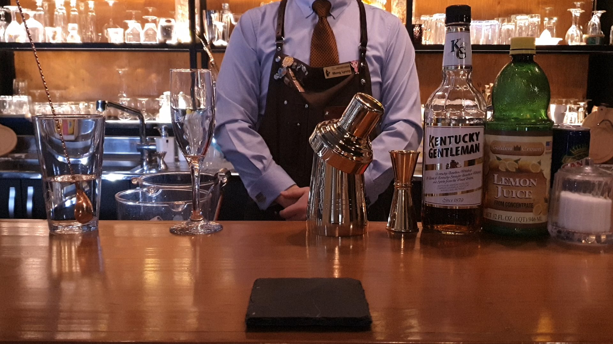
위와 같이 재료를 준비해 줍니다.
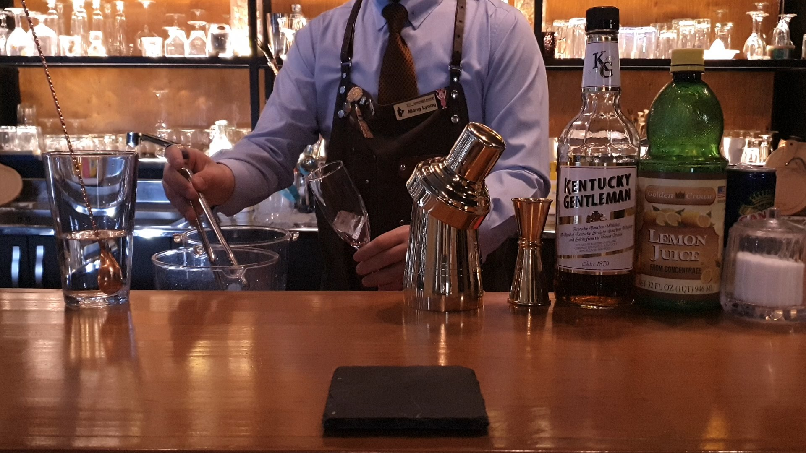
먼저 글라스에 얼음을 넣어 칠링 해 줍니다.
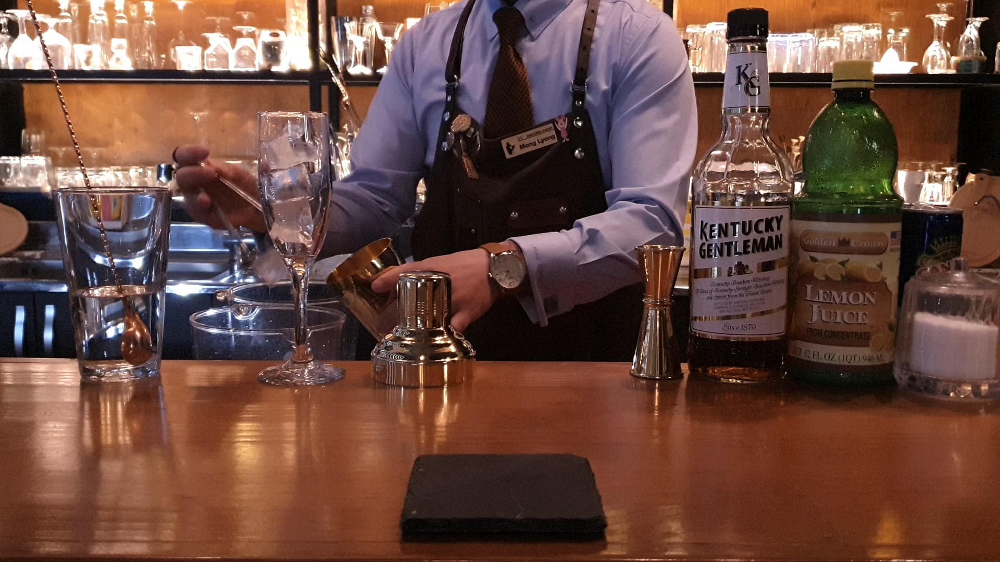
그 다음 쉐이커에 얼음을 넣어줍니다.
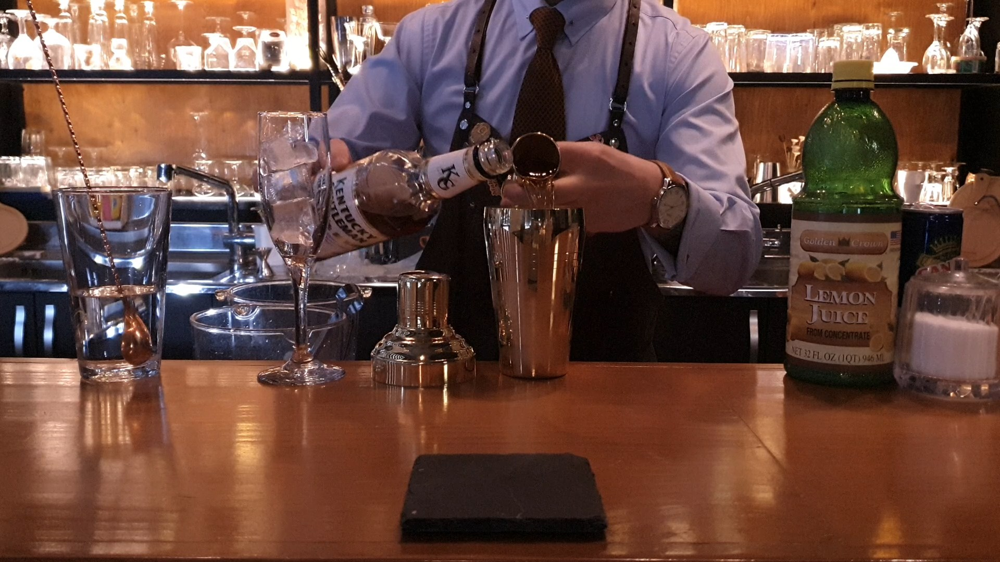
베이스 버번위스키를 1 1/2oz 넣어줍니다.
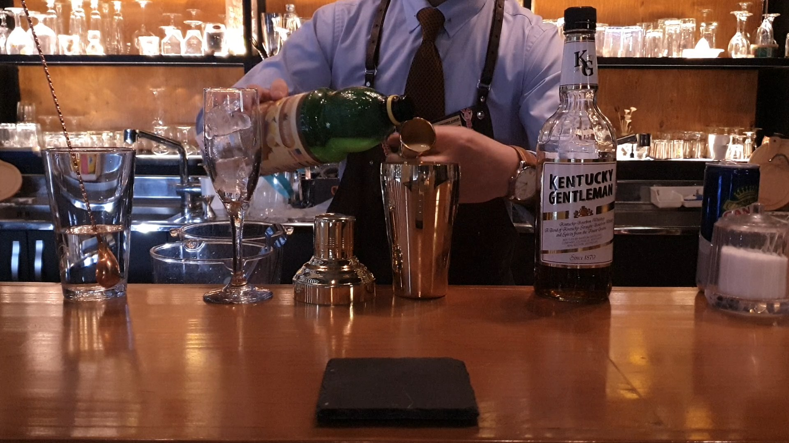
레몬주스 1/2oz 넣어줍니다.
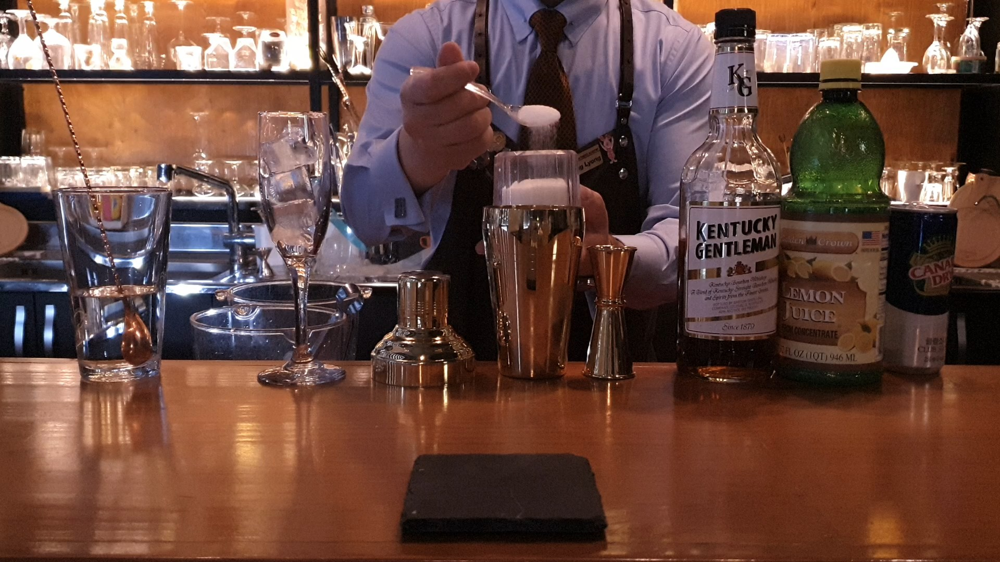
설탕 1tsp을 넣어줍니다.
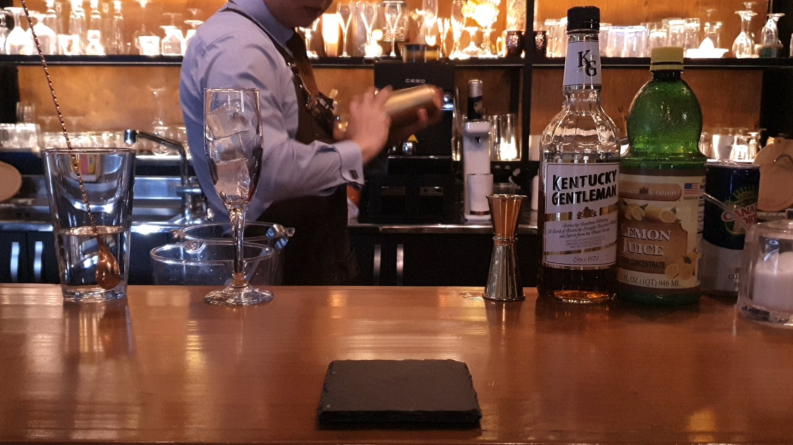
쉐이커에 스트레이너와 캡을 결합한 뒤 힘차게 쉐이킹해줍니다.
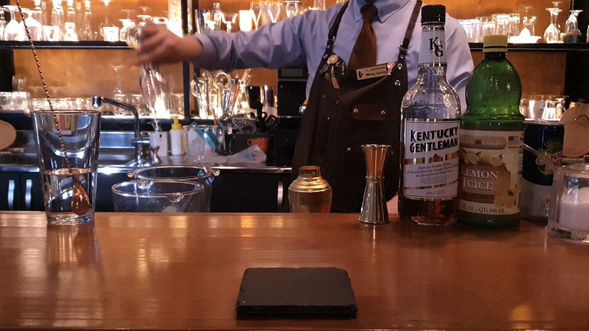
글라스에 칠링된 얼음을 제거한 뒤
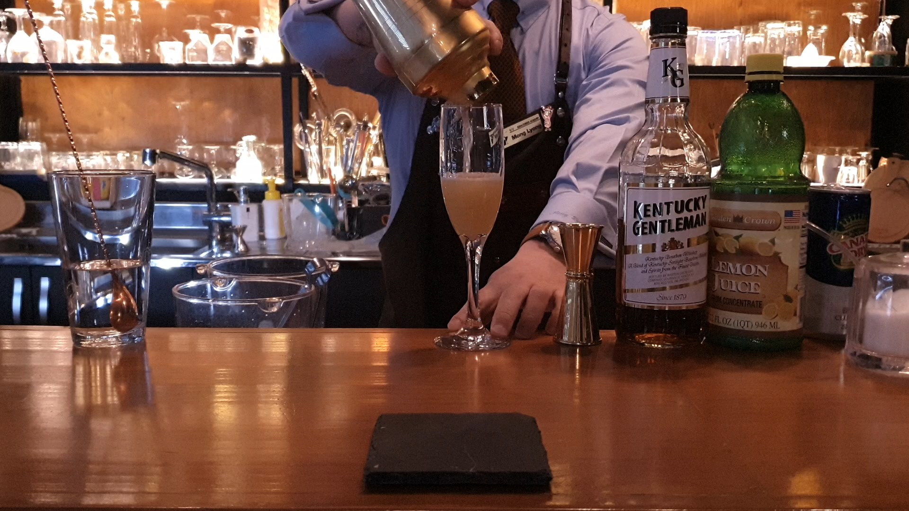
내용물을 따라내줍니다.
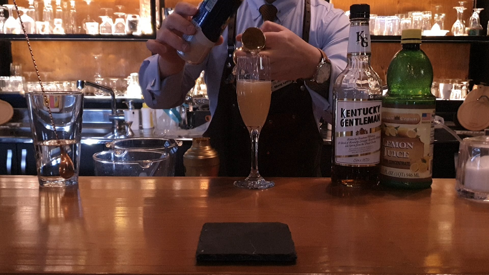
소다 워터 1oz 를 넣어줍니다.
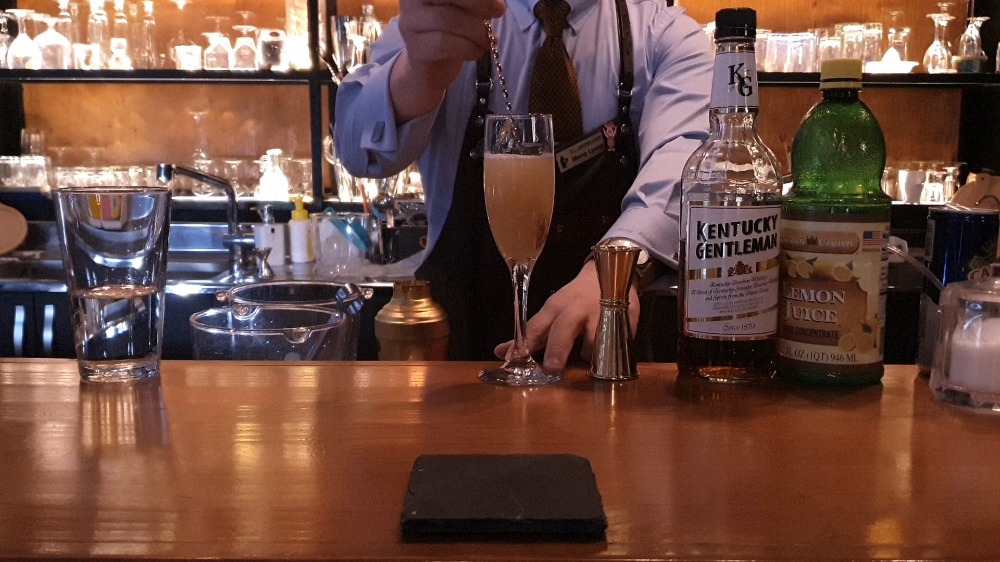
바 스푼을 이용해 가볍게 저어줍니다.
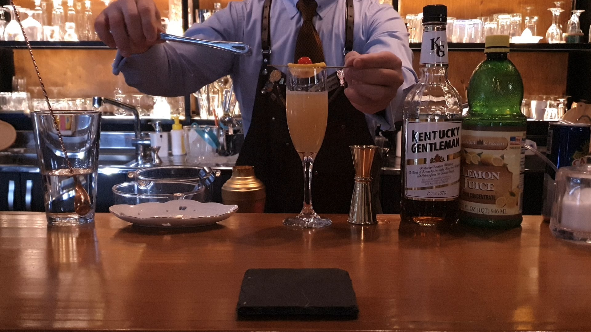
레몬 슬라이스와 체리로 가니쉬 해줍니다.
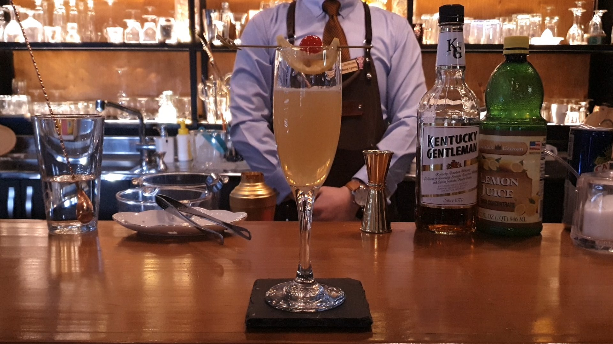
위스키 사워가 완성되었습니다.